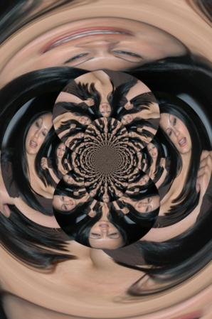

Simbionte
 De: La Frikipedia, la enciclopedia extremadamente seria.
De: La Frikipedia, la enciclopedia extremadamente seria.
Simbionte es toda criatura del sexo contrario, que cuando encuentran a su presa la convierte en un calzonazos.
Generalmente suelen ser personas de ambos sexos, aunque suelen ser mujeres y exteriormente se caracteriza por tener un par de bultos prominentes un poco mas al sur de los hombros, con los que puede atraer la mirada y un singular contoneo con el que el calzonazos queda hipnotizado.
Otra característica importante del simbionte, es su capacidad de gruñir a casi cualquier iniciativa que conlleve a su calzonazos un intento de aproximación con sus colegas, es decir, fiestas, salir a tomar unas cervezas, viaje de colegas, bromas y comentarios.
La presa a la que posee suele ser un hombre, en ocasiones incluso un superheroe como Spiderman, pero ella va rodeando todo su cuerpo, cambiándolo por fuera y por dentro como hacía el simbionte negro; para acabar convirtiendo su personalidad y cambiarlo completamente al antojo de ella. Dejará entonces de ser un superheroe para sus amigos, y pasará a ser un villano más.
Como detectar que tu novia es un simbionte
 Está tratando de poseerte (y tu a ella)...
- Tu novia se agarra a ti como una lapa, y no puedes hacer nada sin su supervisión, debido a que ya es parte de ti, de todo lo que te rodea, ya no tienes tu espacio.
- Ya no eres capaz de hablar con tus colegas, con tu familia, etc, sin que ella intente traducir todo aquello que dices, intentando imponer su punto de vista. Incluso puede llegar en el momento en el que hables ya por iniciativa propia con tus colegas a través de ella, para evitar conflictos con ella.
- Tu opinión y la de tu novia se convierten en una sola, aunque en el fondo sepas que no debería ser así. En el caso de que intentes defender tu opinión, ella hará por cambiarla a toda costa.
- Tu novia no confía en tus colegas, es mas, los acusa de que puedan ser los culpables de infidelidades, borracheras, etc.
- Cuando consigues deshacerte de tu novia, para quedar con tus colegas, lo primero que hacen es preguntarte donde te dejaste a la novia.
- Tu novia planifica tu horario, las horas que vas a estar con ella, cuando os comprareis piso, día de la boda, número de hijos, tu cepillo de dientes, tu pasta de dientes, las gafas que te tienes que poner, tirar las gafas y ponerte lentillas a pesar de que las tuviste que dejar porque te hicieron un derrame en el ojo, la ropa que te tienes que poner, etc. Entonces te paras a pensar un poco y dices: '¡coño, solo llevo un mes con ella!!'
- Ahora llevas siempre un paquete de chicles contigo, tu fumas y ella no, gran problema, porque ella quiere que dejes de fumar a toda costa y tu no..., solucion!! Una dicena de chicles después de cada cigarrito.Ahora gastas más en chicles que en tabaco!
Como te afectaría en el caso de que fueras poseído por un simbionte
- Calzonazos: quizás la descripción mas próxima, del ser en el que te convertirías en el caso de ser poseido por un ser de estas características.
- Hombre Visagra: mueves el cuello hacia adelante consecutivamente y la frase mas repetida al cabo del día es 'Si cariño' y sus variantes, 'Si amor', 'Si nena', 'Lo que tu quieras cariño', etc. Perdiste la razón en todo, tu voluntad es ahora su voluntad, haces lo que ella dice o quiere.
- Susceptibilidad e Irritabilidad: te vuelves mas sensible con respecto a las bromas, preguntas y comentarios de tus colegas, seguramente sea porque recuerdes aquellas cosas que hacías durante tu soltería que ahora ya no puedes hacer.
- Aislamiento: da igual el número de gente que te rodee, y cuanto alto suene la música, pero cuando hablas con tu simbionte, olvidas por completo donde estas y quien te acompaña.
- Amnesia: reniegas de tu pasado, dices que ya no te gusta beber, que no te gusta la cerveza, cuando fuistes tu quien nos enseñaba nuevas cervezas, y el que la pillaba mas gorda. Esta amnesia también afecta a tus relaciones sociales, olvidánte de tus amigos y amigas, dejan de existir: las cenas sociales, las celebraciones de cumpleaños, las fiestas, borracheras, etc.
- Fines de semana en soledad: antes de ser poseido por un simbionte y convertirte en un calzonazos, lo que mas te preocupaba en la llegada del fin de semana, era la hora de quedar con tus amig@s para irte a tomar algo, y olvidar todos los problemas existentes durante la semana. Ahora, ya es demasiado tarde, eres poseido por un ser inhumano, los problemas de la semana es lo mas emocionante, porque ahora de viernes a lunes, solo te es permitido estar pendiente de tu simbionte, nada de amigos, nada de fiestas, nada de nada sin la supervisión de este, por lo que pasas a convertir el hombre de tu casa, esa será tu única preocupación.
Fases de actuación y manipulación
Si se pone así, estás en un grave problema...
Para manipularte y conseguir algo de ti que no le das la simbionte tiene varias maneras de actuar, muchas veces en este orden una detrás de otra:
- Ojitos/besitos: Te lo pide con cara de buena y/o dandote un besito, acopañado de un "verdad que si cari?"
- Hechar en cara: Si le dices que no sigue con un reproche y te hecha en cara con un "es que siempre ...no se que", el siempre lo usa muuuucho aunque en ocasiones lo cambia por un "pues tu y tus amigos....". Incluso puede decirte "haz lo que quieras" pero en realidad quiere decir "como lo hagas te monto el pollo de tu vida".
- Bronca: Ya no hay nada que hacer, ha empezado la discusión, ahora por su boca no salen besos salen frases como "eres como todos los hombres!" o "ya no me quieres!".
- Llanto y victoria : Acaba llorando y tu consolándola, dándole lo que te pidió inicialmente y además pringas y le das más aun de lo que te pidió, chaval, la has cagado, si le ha funcionado una vez lo va a usar sieeeempre.
Testimonios de poseídos
Si te dejaste hacer ésto es porque ya tocaste fondo...
Este espécimen existe entre nosotros, ayudar a vuestro amigo calzonazos a mostrarle la realidad en la que vive, por al fin y al cabo cada uno es como es, y tarde o temprano se acabará dando cuenta de todo esto, y cuanto mas tarde mas doloroso.
"Hola me llamo Juan y tengo una novia que es un simbionte" - Juan el primer día en terapia de grupo
"Yo dejé de lado a mis amigos, mis aficiones, y mis metas, para acabar haciendo vida de casado siendo menor de 30 años, hasta que al final abrí los ojos y fui a terapia de grupo 'Calzonazos anónimos'" - MDD
"Mi novia había pasado a ser mi madre, sólo le faltaba limpiarme el culo....bueno a veces también lo hacía" - RH
"Yo también fuí víctima de un simbionte, y me convertí en un calzonazos, pero con la ayuda de todos y unas buenas cervezas, lo conseguí superar." - Anónimo
Enlaces de interés
Enlaces externos
Terapia de grupo en Facebook
Autor(es):
- Frikiman
- Mad Max
- Dark temptation
- Comentaristainformal
- Korrrpunk
- 62666
- Madrededios
Frikipedia 2005-2016, Licencia
GFDL 1.2 - Extraído por FrikiLeaks